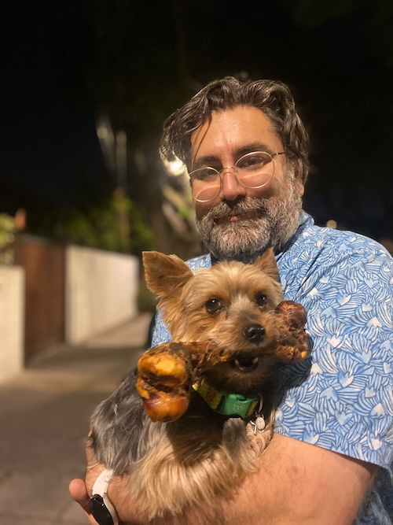

About Me

Interests
My research bridges multiple domains:
- Cellular & Molecular Biology, Genomics & Biomedicine
- Data Science: Extracting meaningful patterns from complex biological datasets
- Creative Coding: Exploring the potential of computational tools
Work
- Scientist in Cellular and Molecular Biology, most of the time with a flavour of neurobiology, developmental neurobiology, and cardio-metabolism in many tissues.
- Genomics methodologies practitioner, previously at the bench and then on the computational side.
- Computational Biology + Systems Biology + Genomics are my principles.
- Worked in academia, and in early research within pharma.
- Always keeping a foot in academic collaborations - papers, student internships and rotations, supervision… et al.